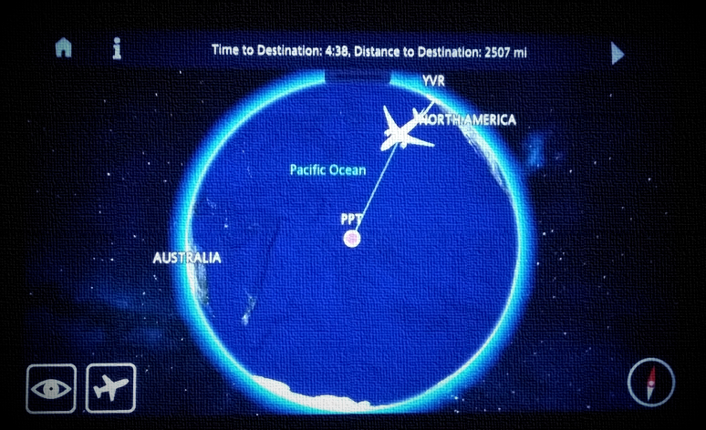
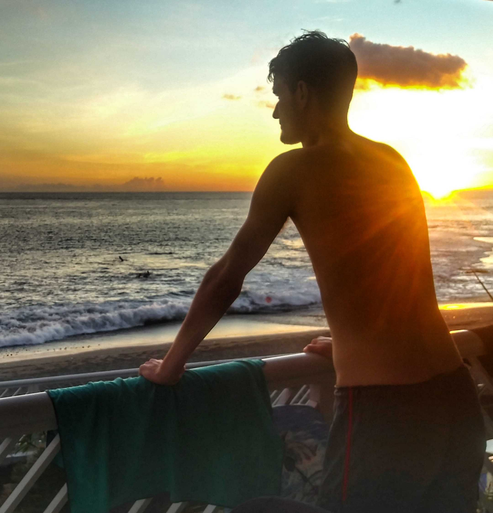
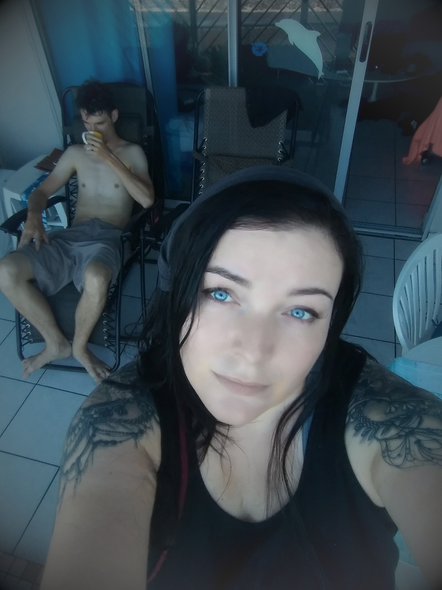

We are travelling around the islands of Polynesia.

'Tis a Pirate's Life for Us
There is a reason the flight from Paris to Pappeete (22 hours, mid-way landing in Vancouver for refueling) was so cheap - you have to take a Covid test before flying. If you’re positive, you’re out. The tests in Poland are a joke, so we took it as an excuse to see our Berlin friends for the first time since the pandemic started. It all already felt much less hopeless than the Warsaw we left behind. I imagine by the time anyone reads this, the Covid test will be a common enough experience that there is no need to describe it. Suffice to say, we passed. Despite some setbacks at Tegel airport we managed to get to Paris and board the flight to Papeete. At boarding, a flight attendant checked our test results, health declarations and temperature. And we were let onto a plane to paradise. Far away from world torn between an epidemic and recession, and fast approaching the fork in the road between revolution and genocide. There is none of that here. No, on the islands of South Pacific we are as far from these concerns as we can be. Eva and Brett, Pirates if the South Seas, tired of humanity’s bullshit.

So anyhow, we've landed in Tahiti. It sounds pretty nuts, but we’re here. We’re in the world’s navel. Time zone exactly 12 hours behind the one we departed. The AirBnB is right at the western seaboard and we hear the roar of the waves all night. The beach is black volcanic sand and the water is neon blue. We have this place for 5 weeks, and plan to use it as a base to thoroughly explore Tahiti and Moorea, and then… who knows? It was a one-way flight. We can stay in French Polynesia for up to 3 months. The internet is good enough that we can both work remotely. Time zones are nuts though – an Ontario work day starts at 3AM for us. And today we bough a couple of inexpensive bikes, and rode them back from Pappeete to Puna’Auia. They’re gonna get a lot of use in the coming months. Now real talk: how is this actually doable. The pandemic has made a lot of traveling cheaper, but more risky. So the flight from Paris was 800 euros, the AirBnB is 1000/month. Not bad. About 30% of what it would be in normal times. But it’s a gamble – if you get a positive COVID test (or let an asshole airline worker delete your booking like what happaned to us at Tegel when we didn't have the health declarations yet... luckily an awesome AirFrance dude restored it once we got to Paris) you’re out and most of the money’s gone. The gamble paid off for us though. On top of that, you have to remember that food costs are high here – many products get shipped in thousands of miles. So we plan to cook our own food and buy local products as much as we can. The initial trip to the supermarket ate 100 bucks for absolute basics – guess that’s comparable to a major Western city, and much cheaper than, say, Iceland. We already feel like we’ve reclaimed 2020.


Brett made a hyperlapse video of a walk along the beach downstairs: